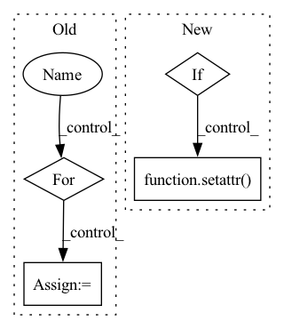

Pattern ID :24660
Before Change
self._env,
self.device,
)
if path :
leaf_module = self._dmp_wrapped_module
split_path = path.split(".")
for name in split_path[:-1]:
leaf_module = getattr(leaf_module, name)
setattr(leaf_module, split_path[-1], sharded_module)
else:
self._dmp_wrapped_module = sharded_moduleAfter Change
) -> nn.Module:
// pre-sharded module
if isinstance(module, ShardedModule):
return module
// shardable module
module_sharding_plan = self._plan.get_plan_for_module(path)
if module_sharding_plan:
sharder_key = sharder_name(type(module))
module = self._sharder_map[sharder_key].shard(
module,
module_sharding_plan,
self._env,
self.device,
)
return module
for name, child in module.named_children():
child = self._shard_modules_impl(
child,
path + "." + name if path else name,
)
setattr( module, name, child)
return module
def _init_parameters(self, module: nn.Module) -> None:In pattern: SUPERPATTERN
Frequency: 4
Non-data size: 4
Instances Fragment ID: 76478142
Project Name: pytorch/torchrec
Commit Name: f13d0c06f6492b058beeb9fe7e2b9e2bbaa5f0f2
Time: 2022-11-07
Author: dstaay@meta.com
File Name: torchrec/distributed/model_parallel.py
M Class Name: DistributedModelParallel
N Class Name: DistributedModelParallel
M Method Name: _shard_modules_impl(3)
N Method Name: _shard_modules_impl(4)
M Parent Class: FusedOptimizerModule,nn.Module
N Parent Class: FusedOptimizerModule,nn.Module
M File Name: torchrec/distributed/model_parallel.py
N File Name: torchrec/distributed/model_parallel.py
M Start Line: 342
M End Line: 371
N Start Line: 352
N End Line: 374
Before Change
if path:
leaf_module = self._dmp_wrapped_module
split_path = path.split(".")
for name in split_path[:-1]:
leaf_module = getattr(leaf_module, name)
setattr(leaf_module, split_path[-1], sharded_module)
else:
self._dmp_wrapped_module = sharded_moduleAfter Change
) -> nn.Module:
// pre-sharded module
if isinstance(module, ShardedModule):
return module
// shardable module
module_sharding_plan = self._plan.get_plan_for_module(path)
if module_sharding_plan:
sharder_key = sharder_name(type(module))
module = self._sharder_map[sharder_key].shard(
module,
module_sharding_plan,
self._env,
self.device,
)
return module
for name, child in module.named_children():
child = self._shard_modules_impl(
child,
path + "." + name if path else name,
)
setattr( module, name, child)
return module
def _init_parameters(self, module: nn.Module) -> None: Fragment ID: 76478140
Project Name: pytorch/torchrec
Commit Name: f13d0c06f6492b058beeb9fe7e2b9e2bbaa5f0f2
Time: 2022-11-07
Author: dstaay@meta.com
File Name: torchrec/distributed/model_parallel.py
M Class Name: DistributedModelParallel
N Class Name: DistributedModelParallel
M Method Name: _shard_modules_impl(3)
N Method Name: _shard_modules_impl(4)
M Parent Class: FusedOptimizerModule,nn.Module
N Parent Class: FusedOptimizerModule,nn.Module
M File Name: torchrec/distributed/model_parallel.py
N File Name: torchrec/distributed/model_parallel.py
M Start Line: 342
M End Line: 371
N Start Line: 352
N End Line: 374
Before Change
device,
)
for _ in range(args.epochs):
for _ in tqdm(range(args.limit_train_batches)):
loss, logits, labels = train_pipeline.progress(iterator)
if __name__ == "__main__":After Change
if args.in_memory_binary_criteo_path is None:
for stage in STAGES:
attr = f"limit_{stage}_batches"
if getattr(args, attr) is None:
setattr( args, attr, 10)
eb_configs = [
EmbeddingBagConfig(
name=f"t_{feature_name}", Fragment ID: 76478138
Project Name: pytorch/torchrec
Commit Name: 46f6aa6a827299037c1f1827f54e929344022d87
Time: 2021-11-30
Author: rahulkindi@fb.com
File Name: torchrec/examples/dlrm/dlrm_main.py
M Class Name: AnonimousClass
N Class Name: AnonimousClass
M Method Name: main(1)
N Method Name: main(1)
M Parent Class:
N Parent Class:
M File Name: torchrec/examples/dlrm/dlrm_main.py
N File Name: torchrec/examples/dlrm/dlrm_main.py
M Start Line: 117
M End Line: 189
N Start Line: 298
N End Line: 374